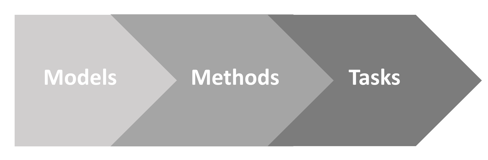

Emukit: Decision making under uncertainty
Andrei Paleyes
SciPy 2023
Part 1: Intuition
Bayesian optimisation:
Bayesian quadrature:

Experiment design:

Revisiting "Decision making under uncertainty"
"Decision making"?
"Under uncertainty"?
Part 2: Scope

Models
- Gaussian process
- Bayesian neural network
- Random forest
- Multi-fidelity
Methods
- Bayesian optimisation
- Bayesian quadrature
- Experimental design
Tasks
- Hyperparameter optimisation
- Data efficient learning
- Benchmarking
Part 3: Using the library
model_gpy = GPy.models.GPRegression(X,Y)
model_emukit = GPyModelWrapper(model_gpy)
parameter_space = ParameterSpace([
ContinuousParameter('x1', -5, 10),
ContinuousParameter('x2', 0, 15)
])
model_variance_acquisition = ModelVariance(model = model_emukit)
experimental_design_loop = ExperimentalDesignLoop(
model = model_emukit,
space = parameter_space,
acquisition = model_variance_acquisition
)
experimental_design_loop.run(f, 10)
while not stopping_condition.should_stop(self.loop_state):
self._update_models()
new_x = self.candidate_point_calculator.compute_next_points(self.loop_state, context)
results = user_function.evaluate(new_x)
self.loop_state.update(results)
class IPriorHyperparameters:
def generate_hyperparameters_samples(...
def fix_model_hyperparameters(...
class IntegratedHyperParameterAcquisition(Acquisition):
def __init__(
self,
model: Union[IModel, IPriorHyperparameters],
...
Wait!
Numpy arrays ...
Agnostic of modeling framework ...
Performance!
Part 4: But why use Emukit then?
Future plans
- Friendly to beginners
- Feature completeness for UQ
- Integrations
- Ideas?
Credit to the Emukit team (current team in bold green)
Andrei Paleyes
 Maren Mahsereci
Maren Mahsereci Neil Lawrence
Neil Lawrence
Mark Pullin
Cliff McCollum

Javier Gonzalez